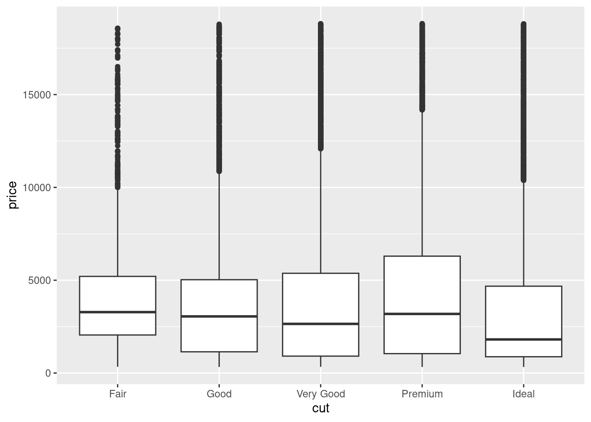
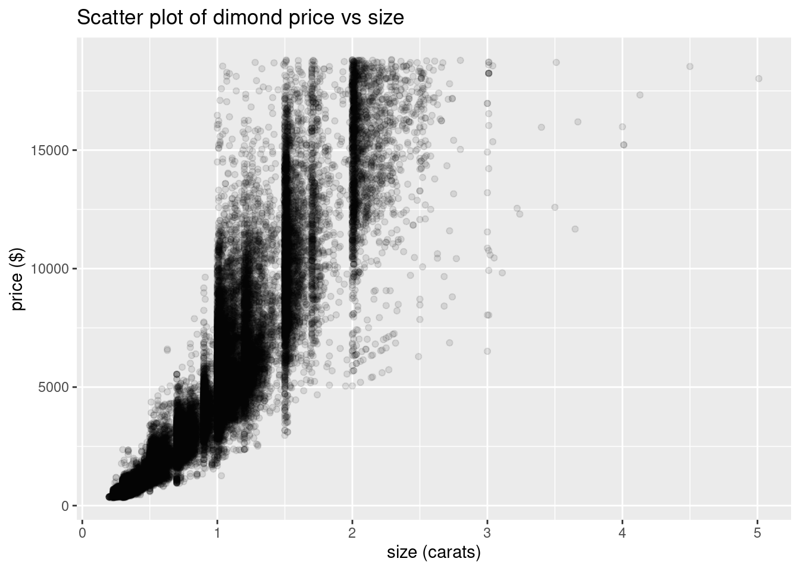

8Exploratory Data Analysis and Scientific Discovery
8.1 What is EDA?
8.1.1 Exploratory Data Analysis (EDA)
Exploratory data analysis, or EDA for short, is a vague, hard-to-define concept… but is also the activity that will occupy much of your time as a data scientist.
Here’s the problem:
When you first get a dataset, you don’t know very much about it. You probably choose the dataset because you thought it might help you solve a particular problem, but you don’t know how (or if) the data can help you do that, or what other nuances might be present in the dataset.
So, the first step is to do a little digging: open the data up, and:
Plot a few basic graphs (EDA is mostly done with graphs because they make it very easy to spot patterns).
Calculate some simple statistics (e.g. averages and ranges)
This basic analysis will probably give you some ideas about the data. You’ll probably spot some patterns that bear further investigation, or maybe some issues that you’ll need to address.
How do you do this? More analysis, visualization, and general experimentation, which in turn will reveal more potential patterns, and so the cycle continues…
Your end goal is to find some interesting questions in the dataset that deserve some kind of follow-up.
Does this seem all seem vague and open-ended? That’s because it is fundamentally a creative activity. There’s no one “right way” to create a painting or a book. Exploratory data analysis is the same. And just like those other creative activities, the way to get better is to practice.
8.1.2 Types of variation to explore
Hopefully you are now convinced why graphing data is important. But what type of graphs should you create?
The rest of this tutorial will go through different types of graphs, but here are some general concepts to bear in mind:
We can broadly divide EDA into two types: univariate and multivariate
Univariate, or “one variable”, analysis looks at the variation within a single variable’s values. Our goal here is to understand the distribution of this variable.
Multivariate (i.e. “many variables”) refers to analysis of 2 or more variables where we want to examine the covariance between variables. In other words, how does one variable change in response to changes in another.
As a general principle, you should do univariate EDA first before multivariate EDA.
We have put together a flow chart to help you pick the right type of graph for particular types of data and analysis goals: available as a PDF here.
8.2 Starting EDA
8.2.1 A “first steps” EDA checklist
Here’s a checklist of things to check when you begin EDA on a dataset.
Formulate your question
Load the data and check the dataset’s documentation
It’s generally a good idea to go into EDA with a question in mind.
The question doesn’t have to be perfect - indeed, you might well decide that the question can be improved after you’ve explored the data.
However, having a question in mind allows us to focus our EDA and not get distracted by the huge number of possibilities that we can explore with a single dataset.
So: what makes a good question?
In general, we want:
to be as specific as possible,
while still being interesting.
Specificity is good because it makes our analysis shorter and more direct. Broad questions are often of more general interest, but it is harder to come up with an approach to answering them.
An analogy is a New Year’s resolution: consider “Exercise more” vs. “Go for a 30 minute run 3x per week.” One of these is specific and measureable (while still be relevant to the overall goal of increasing your fitness), while the other is much broader and less-defined (and potentially easier to weasel out of…).
For this tutorial, our starting question will be:
What is the effect of the size of a diamond on its price?
This is a better starting place that a broader question such as “What factors influence diamond prices?” Where would we start with such a question? Not only would we want data on the physical characteristics of diamonds, but probably also on the supply of diamonds, the controls imposed by diamond cartels, the effect of advertizing to make diamonds seem exclusive, popular campaigns against blood diamonds… we could spend all day just thinking about the question, and never get to the actual EDA!
8.2.3 Load the data and read the documentation
For this tutorial, we will be using the diamonds dataset, which is automatically loaded with the ggplot2 graphing package.
This means that you just need to run library(ggplot2) or library(tidyverse) (the tidyverse meta-package includes ggplot2), and the diamonds dataset will be available for you to use.
In the real world, loading data tends to be a much messier task (a topic for another day).
8.2.3.1 Check the dataset’s documentation
Most datasets come with documentation describing the data that they contain.
In R, most datasets that come as part of a package have some kind of documentation page. In RStudio, you can bring this up by running ?name_of_dataset in the console, e.g. ?diamonds. That won’t work in this tutorial, but you can also see the diamonds documentation page online here: https://ggplot2.tidyverse.org/reference/diamonds.html
8.2.4 Get an overview of the data
We can use the glimpse function to get a compact overview of a dataframe.
Note: the glimpse function is a modern “tidyverse” version of an older R function called str.
Run the glimpse function to get an overview of the columns in the diamonds dataset.
8.2.5 Look at the first and last rows of your dataframe
Sometimes dataset creators start with grand intentions, but motivation or reality gets in the way. Because of this, the data at the top of datasets often looks great. However, the last rows in the dataset may contain incomplete or problematic data that got added on at the end.
We can examine both the first and last rows of the dataset with the head and tail functions respectively. The syntax of these functions is head(dataset_name), e.g.:
head(diamonds)
# A tibble: 6 × 10
carat cut color clarity depth table price x y z
<dbl> <ord> <ord> <ord> <dbl> <dbl> <int> <dbl> <dbl> <dbl>
1 0.23 Ideal E SI2 61.5 55 326 3.95 3.98 2.43
2 0.21 Premium E SI1 59.8 61 326 3.89 3.84 2.31
3 0.23 Good E VS1 56.9 65 327 4.05 4.07 2.31
4 0.29 Premium I VS2 62.4 58 334 4.2 4.23 2.63
5 0.31 Good J SI2 63.3 58 335 4.34 4.35 2.75
6 0.24 Very Good J VVS2 62.8 57 336 3.94 3.96 2.48
to display 6 rows from the top (or bottom) of the dataset. We can change the number of rows to display with the second argument:
head(diamonds, 10)
# A tibble: 10 × 10
carat cut color clarity depth table price x y z
<dbl> <ord> <ord> <ord> <dbl> <dbl> <int> <dbl> <dbl> <dbl>
1 0.23 Ideal E SI2 61.5 55 326 3.95 3.98 2.43
2 0.21 Premium E SI1 59.8 61 326 3.89 3.84 2.31
3 0.23 Good E VS1 56.9 65 327 4.05 4.07 2.31
4 0.29 Premium I VS2 62.4 58 334 4.2 4.23 2.63
5 0.31 Good J SI2 63.3 58 335 4.34 4.35 2.75
6 0.24 Very Good J VVS2 62.8 57 336 3.94 3.96 2.48
7 0.24 Very Good I VVS1 62.3 57 336 3.95 3.98 2.47
8 0.26 Very Good H SI1 61.9 55 337 4.07 4.11 2.53
9 0.22 Fair E VS2 65.1 61 337 3.87 3.78 2.49
10 0.23 Very Good H VS1 59.4 61 338 4 4.05 2.39
We could also rewrite the previous code chunk using the pipe operator:
diamonds %>%head(10)
TODO: book exercises
Use the tail function to display the last 8 rows of the diamonds dataframe. Note that this code uses the pipe operator %>% to supply the first.
As you can see, the diamonds data is actually pretty nice at both the top and the bottom (as you might hope for an “offical” ggplot dataset). The example datasets that come with packages are often nice like this - unfortunately real-world data is usually less friendly.
8.2.6 Make sure that the data makes sense
We expect certain things about our dataset to be true:
Does the dataset have the correct number of rows and columns?
Do the numbers in each column make sense:
does a column called date contain dates, or does it have random numbers that don’t seem to be dates?
does a column called USA_states contain all 50 states as you might expect? Or does it also contain “non-state” regions such as the District of Columbia and Puerto Rico.
What is an observation in the dataset?
In the diamonds dataset, each row represents a different diamond. This is probably what you would expect. But what if the dataset rows each represented a diamond store instead, and the numbers were the average of all the diamonds in that shop? In this scenario, the data (and what questions we can ask with it) would be very different.
Are the values plausible?
For example, in the diamonds dataset, are the prices for the diamonds realistic? Is the range of values of the carat variable realistic (for example, most diamonds are pretty small, so if this dataset claimed to have data on 50,000 diamonds that were all 100 carats or larger, then we might be a little suspicious…)
8.2.7 Start the EDA cycle
Now that you’ve verified the data, you can start on the EDA process.
As a reminder, we usually want to start with univariate analysis of each variable separately. Programs and data are both complicated, so it is always a good idea to start small and simple, and add in complexity gradually.
If we do the opposite and start complicated, it is easy to make small mistakes and assumptions which might make our final conclusions wrong!
Calculate summary statistics the 6 summary statistics listed above for the continuous variable carat from the diamonds dataframe.
In our original question, we were interested in two variables: size (i.e. carat) and price. We should therefore calculate summary statistics for the price variable as well
TODO: book exercises
Repeat your summary statistics calculation for the continuous variable price.
8.3.2 Graphical analysis of carat
With graphs, we want to visualize the distribution of a variable.
Two good graphs for visualizing the distributions of one continuous variable are histograms and boxplots. (You might also want to look up density plots and violin plots on the “What graph should I plot” cheatsheet.)
TODO: book exercises
Create a histogram of the carat variable.
Plots of distributions show common versus less common values of a variable. This allows us to answer questions like:
What values are common? Does this match your prior expectations?
What values are uncommon? Again, does this match your prior expectation?
Does the overall appearance show any unusual patterns that bear further investigation?
One thing you might note is that the distribution is not very smooth. To make it smoother, we could increase the size of the bins. However, to see what’s going on with this distribution, let’s decrease the bin size.
TODO: book exercises
Create another histogram of the carat variable, but this time set the binwidth parameter to 0.01
Interesting! There’s an odd sawtooth pattern to this data that suggests several clusters to the data. This pattern raises several interesting questions:
What’s causing these groups (“clusters”)?
Why does each cluster have a sharp left-hand side, and a long tail on the right?
8.3.3price visualization
We also want to look a the distribution of the price variable. Let’s do that with a new type of graph: the box plot.
Box plots (also called box-and-whisker plots) visualize not only the distribution but also show several summary statistics:
TODO: replace with my own image that I know I own copyright of.
knitr::include_graphics("../img/boxplot.png")
We create a box plot using the geom_boxplot geom function. There are two required aesthetic mappings in a box plot (note that in ggplot the orientation of the boxplot is rotated 90 degrees):
x should be a categorical variable to create different box plots for.
y is the variable that we want to show the distribution of.
diamonds %>%ggplot() +geom_boxplot(mapping =aes(x = cut, y = price))

You might have spotted a problem here: what if we only want to create one box plot rather that breaking down the variable into a different box plot for each category of x? In this case, we need to provide a character string to x instead of a variable name - however, despite the fact that x is a fixed value, it still goes inside the aes function…
TODO: book exercises
Create a single box plot of the price variable by providing the string "price" as the argument to the x parameter.
8.3.4 Violin plots
An alternative to the boxplot is the violin plot. This combines aspects of the histogram and boxplot into a single graph.
The code for a violin plot is almost identical to the code or a boxplot - we just use the geom_violin() geom function:
diamonds %>%ggplot() +geom_violin(mapping =aes(x ="price", y = price))
TODO: Include a comparison of histogram, boxplot, and violins (all in the same plot, aligned for cmparison).
8.4 Multivariate covariation
When we have multiple variables we want to understand how their variation is related: this is called covariation.
8.4.1 Co-variation with summary statistics
TODO
8.4.2 Graphical
If you have two continuous variables, such as price and carat in the diamonds dataset, then a scatter plot is generally a good method of examining their covariation:
TODO: book exercises
Create a scatter plot with price on the y-axis and carat on the x-axis.
We can see several things about this graph:
There’s obviously a positive relationship between these two variables.
It’s hard to tell the density of the points (i.e. where most of the points fall), because in many places all the point overlap in a blog.
We have a several options to show density.
We could make the points transparent with the alpha parameter. Then dense regions would be darker (because there would be many overlapping transparent points). For example, with alpha = 0.1:
diamonds %>%ggplot() +geom_point(mapping =aes(x = carat, y = price), alpha=0.1) +labs(title ="Scatter plot of dimond price vs size", y ="price ($)", x ="size (carats)")

We can also create a heat map, which is a colored grid where the intensity of the color represents a value on a scale - in this case, the color represents the density. This uses the geom_bin2d geom function:
diamonds %>%ggplot() +geom_bin2d(mapping =aes(x = carat, y = price)) +labs(title ="Heat map of dimond price vs size", y ="price ($)", x ="size (carats)")
This is essentially a 2-dimensional histogram. Each square is like a bar in a univariate histogram. In this heat map, the color represents the “height” of the 2-dimensional bin, i.e. how many diamonds fall into each cell of the heat map’s grid.
8.4.3 Coloring and faceting by categorical variables
TODO
8.5 Your turn
8.5.1 Do some EDA
There are all kinds of other graphs we can plot.
In the code cells below, experiment on your own with some exploratory data analysis of the diamonds dataset.
From our previous explorations, it there is a positive relationship between price and carat; in other words, as one variable increases, so does the other. However:
the relationship was not perfect: there seemed to be some uneven scatter. What other variables might be influencing this relationship?
relatedly, what other variables are related to price (& what is the variation within those other variables by themselves)?
TODO: book exercises
In the following code boxes, play around with some EDA of your own. You might find it helpful to look at the “What graph should I plot” cheatsheet for inspiration, and remember that you can always Google a geom function (or ask an instructor) to get more information on how to use it.